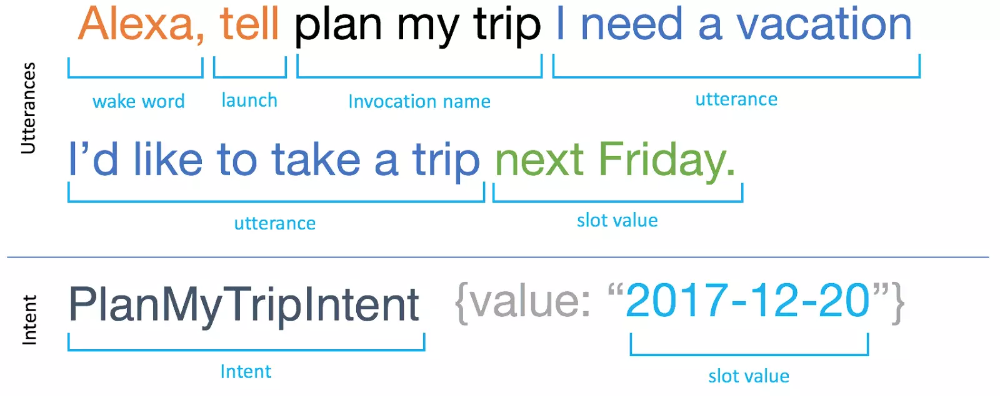
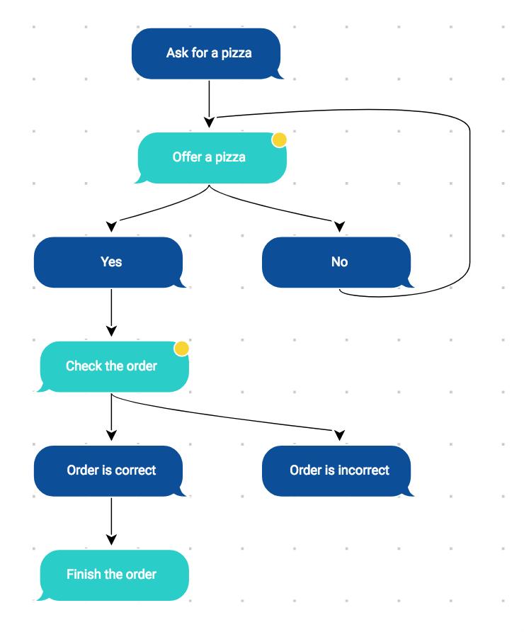

Everything you wanted to know about conversation design but
were afraid to ask - video
 How Alexa parses your -utterances-
The
Voice Design Process For Voice User Interfaces (VUIs)
Voice User Interfaces are still an early technology, though
they have connection to previous interfaces such as Command Line
Interfaces. Because they are a recent mass-use technology, the
process of designing a VUI is still developing.
One method based on our iterative design model for creating
GUIs, adapted with additional steps for voice. - video ###
Understand
User Persona
who will use our interface?
what are their needs?
what device are we designing for?
System Persona
you decide how it behaves and sounds
Journey mapping
Explore
Sample dialog
“Happy path” - first draft
Table reading - take notes
“Wizard of Oz” test
Materialize
User flowchart - wireframe
Voice design - in a spreadsheet
New - multi-modal interactions (combo of screen and
voice.)
“voice first” - then screen interactions afterwards

flow chart
How to interact with Alexa - Voice Design Guide - video
Glossary (Alexa):
Wake word —this is the key for Alexa to start listening.
Launch —a connector word to link the wake word and invocation
name. Supported words include: ask, tell, open, launch, run,
begin, and more.
Invocation name —this is a custom phrase that customers say to
invoke your skill. It is generally two–three words long and
closely related to the skill’s functionality.
Utterance —this is the specific phrase that the user wants to
take action on with the skill.
One-shot utterance —the top example is a one-shot utterance,
where all information is given at once and fully satisfies what is
needed to activate an intent.
Slot value —a variable part of an utterance. In our
travel-planning scenario, the starting location, destination,
activity, and date are all slot values.
Intent —an action that the skill can handle. A single intent
can have many different utterances, with or without slots to
account for what users may say.
Basic user interface
guidelines:
Express intentions in examples
Limit the amount of information
Recommended: do not list more than 3 different options per
interaction
with a longer list of options, group them into subcategories.
Start with the most popular options, then ask if they would like
more options.
Use some form of simple visual feedback to let the user know
when the system is listening
Make It Clear that the User Needs to Respond
Don’t Assume Users Know What to Do
Clearly Present the Options
Keep It Brief
Avoid Overwhelming Users with Too Many Choices
Offer Help for Complex Skills
Ask Only Necessary Questions
Use Confirmation Selectively
Obtain One Piece of Information at a Time
These design tips suggested by Amazon Alexa Best
Practices that may be useful Do’s and Don’ts.
Why Do So Many Digital Assistants Have Feminine Names? - article
- 10 minutes
Why People Name Their Machines - article
- 5 minutes
Write
We’ve now read how humans like to anthropomorphize their
machines, and some of the reasons digital assistants have
historically received feminine names. If you were designing a
digital assistant, what choices would you make in its design?
Would it have a name? A gender? Describe how you would design the
assistant and why you’ve made those choices.